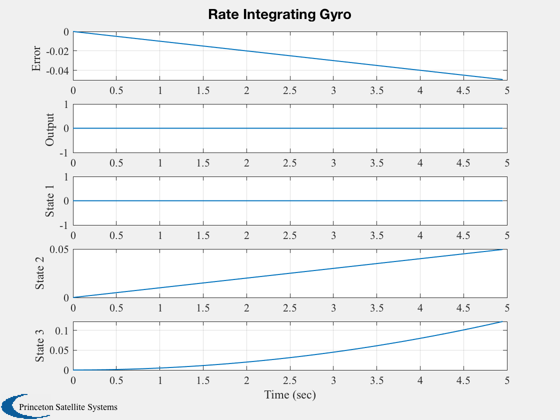
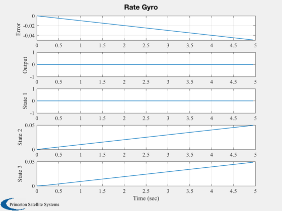
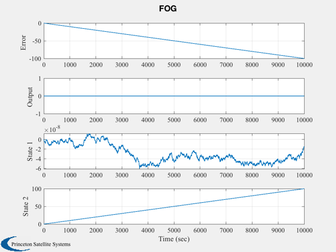
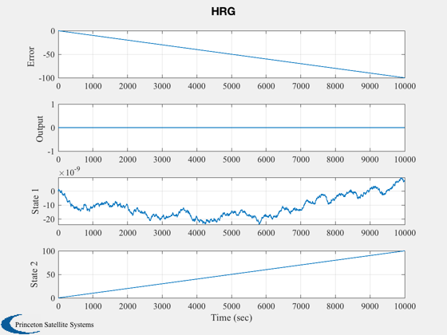

Test the gyro model.
First runs the model with the default RIG, RG, FOG and HRG. ------------------------------------------------------------------------ See also Plot2D, RK4, Gyro ------------------------------------------------------------------------
Contents
%-------------------------------------------------------------------------- % Copyright (c) 1999 Princeton Satellite Systems, Inc. % All rights reserved. %--------------------------------------------------------------------------
Run the RIG simulation
%-----------------------
dT = 0.05;
nSim = 100;
x = zeros(3,nSim);
w = 0.01;
t = dT*(0:(nSim-1));
y = zeros(1,nSim);
Initialize
%----------- d.u = [1;0;0]; d.type = 'mechanical rig default'; d.counter.nBits = 16; d.counter.id = 1; Gyro( 'initialize', d ); Gyro( 'put rate', w );
Output
%------- y(1) = Gyro( 'get output' ); for k = 2:nSim x(:,k) = RK4( 'Gyro', x(:,k-1), dT ); y(k) = Gyro( 'get output' ); end j = 1:k; y = [y-w(1)*t;y;x];
Plotting
%--------- yLabel = ['Error '; 'Output '; 'State 1'; 'State 2'; 'State 3']; Plot2D( t(j), y(:,j), 'Time (sec)',yLabel,'Rate Integrating Gyro');
Run the RG Simulation
%----------------------
x = zeros(3,nSim);
y = zeros(1,nSim);
Initialize
%----------- d.u = [1;0;0]; d.type = 'mechanical rg default'; Gyro( 'initialize', d ); Gyro( 'put rate', w );
Output
%------- y(1) = Gyro( 'get output' ); for k = 2:nSim; x(:,k) = RK4( 'Gyro', x(:,k-1), dT ); y(k) = Gyro( 'get output' ); end j = 1:k; y = [y-w(1)*t;y;x];
Plotting
%--------- Plot2D( t(j), y(:,j), 'Time (sec)',yLabel,'Rate Gyro');
Run the FOG Simulation
%-----------------------
nSim = 10000;
dT = 1;
t = dT*(0:(nSim-1));
x = zeros(2,nSim);
y = zeros(1,nSim);
Initialize
%----------- d.u = [1;0;0]; d.type = 'fog default'; Gyro( 'initialize', d ); Gyro( 'put rate', w );
Output
%------- y(1) = Gyro( 'get output' ); for k = 2:nSim; x(:,k) = RK4( 'Gyro', x(:,k-1), dT ); y(k) = Gyro( 'get output' ); end j = 1:k; y = [y-w(1)*t;y;x];
Plotting
%--------- yLabel = ['Error '; 'Output '; 'State 1'; 'State 2']; Plot2D( t(j), y(:,j), 'Time (sec)',yLabel,'FOG'); % Run the FOG Simulation %----------------------- nSim = 10000; dT = 1; t = dT*(0:(nSim-1)); x = zeros(2,nSim); y = zeros(1,nSim);
Initialize
%----------- d.u = [1;0;0]; d.type = 'hrg default'; Gyro( 'initialize', d ); Gyro( 'put rate', w );
Output
%------- y(1) = Gyro( 'get output' ); for k = 2:nSim x(:,k) = RK4( 'Gyro', x(:,k-1), dT ); y(k) = Gyro( 'get output' ); end j = 1:k; y = [y-w(1)*t;y;x];
Plotting
%--------- yLabel = ['Error '; 'Output '; 'State 1'; 'State 2']; Plot2D( t(j), y(:,j), 'Time (sec)',yLabel,'HRG'); %--------------------------------------